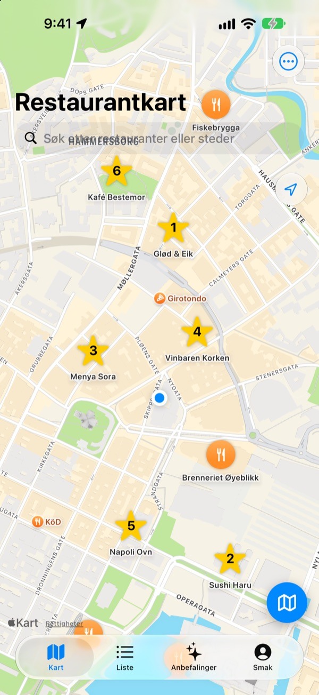
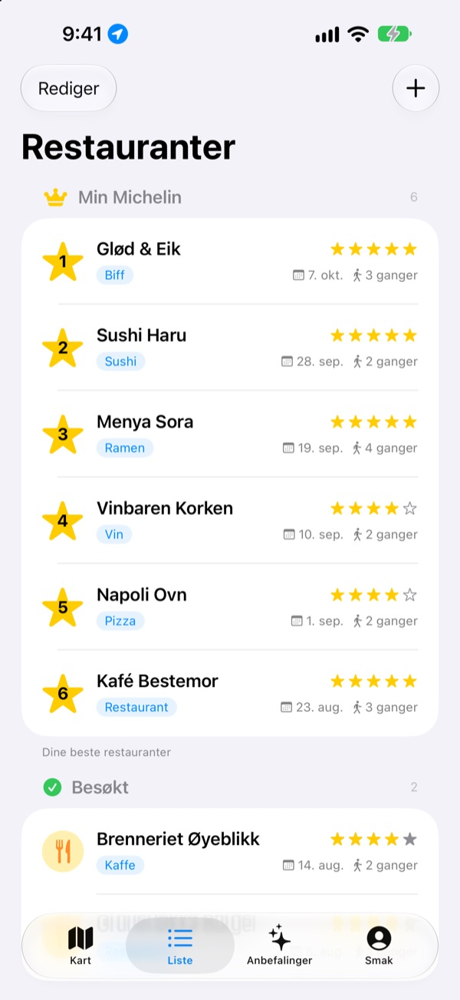
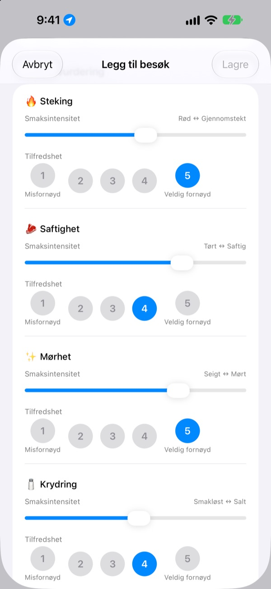
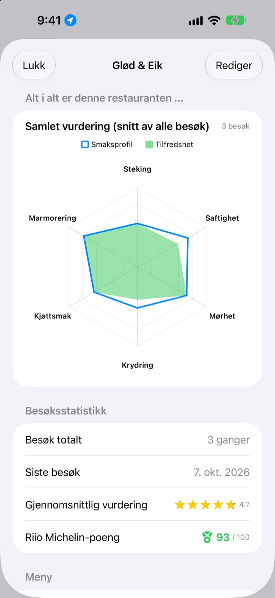

Glem aldri igjen
hvor maten var god
Marker restaurantene du har besøkt og vil prøve på kartet, og noter ved hvert besøk hva du bestilte, bilder og smaken. Når du ikke vet hvor du skal spise, har dine egne notater svaret.
Alle funksjoner er gratis. Ingen registrering, alt blir på din iPhone.

Vurder en rett
Velg en type mat, og still inn hvor kraftig hver smak var og hvor godt du likte den. Samme kriterier og samme utregning som et besøk i appen.
Det var godt, men hva var det jeg bestilte?
Du husker at du likte stedet, men navnet er uklart, og hva du bestilte eller om kraften var for salt, husker du ikke i det hele tatt. Så du søker igjen og leser anmeldelser fra fremmede. Insaeng tar vare på det du selv har smakt, på et kart, så neste valg bygger på din egen erfaring.
Besøkt, Vil dit og din egen Michelin
Søk på kartet eller trykk på et sted i nærheten, så er det lagret. Hold steder du har vært, atskilt fra dem du vil prøve, og ranger de seks favorittene dine fra 1 til 6.
Når noen spør etter et godt sted, viser du bare listen.

Spørsmål som passer retten
Hvor kraftig en smak var, for eksempel styrke eller salt, stiller du med en glidebryter, og hvor godt du likte den, vurderer du for seg fra 1 til 5. Biff handler om steking og saftighet, sushi om ris og fisk, ramen om kraft og nudler.
Hvert besøk lagrer også rett, bilder, stjerner og notater.

Hvor det er verdt å dra tilbake, ser du i tall
Etter flere besøk viser hver restaurant en samlet vurdering med snittet av alle besøk og en Riio Michelin-poengsum av 100 som kombinerer stjerner og tilfredshet.
Når du forlater en lagret restaurant, kommer det litt senere en påminnelse om å notere besøket.

Kom i gang i tre steg
- 1
Lagre en restaurant
Søk på kartet eller trykk på et sted i nærheten.
- 2
Noter besøket
Rett, bilder, stjerner og smak. Smaksvurderingen er frivillig.
- 3
Velg neste sted
Sjekk topp 6 og poengene, og finn veien med Apple Kart, Kakao Map eller Naver Map.
Dette vurderer du for hver type mat
- 🍽️ Generelt
- Styrke, Fylde, Sødme, Salthet, Fethet, Naturlig smak
- 🥩 Biff
- Steking, Saftighet, Mørhet, Krydring, Kjøttsmak, Marmorering
- 🍣 Sushi
- Shari (ris), Neta (fisk), Wasabi, Balanse, Forming, Temperatur
- 🍜 Ramen
- Buljong, Nudler, Chashu, Fyll, Temperatur, Balanse
- 🍕 Pizza
- Deig, Saus, Ost, Steking, Fyll, Balanse
- 🍷 Vin
- Fylde, Tannin, Syre, Aroma, Ettersmak, Balanse
- ☕ Kaffe
- Syrlighet, Fylde, Aroma, Ettersmak, Sødme, Balanse
All annen mat vurderes med de generelle kriteriene i første rad. Du kan også lage egne kategorier.
Vanlige spørsmål
Hvordan legger jeg til en restaurant?
Skriv navnet på restauranten i søkefeltet øverst på kartet, og trykk på «Legg til i restaurantlisten» i resultatet. Du kan også trykke på et sted i nærheten som vises på kartet, og legge det til med en gang. Finner du ikke stedet i søket, kan du legge det til manuelt der du står, eller på et punkt du velger på kartet.
Hva betyr Besøkt, Vil prøve og Topp 6?
Besøkt: restauranter du allerede har vært på. Her kan du føre besøkslogg. Vil prøve: restauranter du har lyst til å prøve en dag. Når du har vært der, endrer du dem til Besøkt på restaurantsiden. Topp 6 (din egen Michelin): rangér de seks restaurantene du liker best, fra 1 til 6. Steder under Vil prøve kan ikke settes på topp 6.
Må jeg vurdere smaken?
Nei, det er frivillig. Vurderer du, går smaksintensitet og tilfredshet inn i restaurantens samlede vurdering og teller med i Riio Michelin-poengene.
Når kommer varselet «Hvordan var besøket i dag?»
Har du vært i nærheten av en lagret restaurant i mer enn fem minutter og går derfra, får du varselet omtrent 40 minutter senere. Funksjonen krever posisjonstilgangen «Alltid» og at varsler er slått på. Vil du ikke ha varselet, slår du av varsler under Innstillinger > Apper > Insaeng, eller endrer posisjonstilgangen til «Når appen er i bruk». Posisjonen sjekkes bare på enheten. Bevegelsene dine lagres ikke og sendes ikke noe sted.
Kan jeg bruke appen uten posisjonstilgang?
Ja. Du kan velge et punkt på kartet selv for å legge til restauranter og føre logg. Det eneste du går glipp av, er visning av din nåværende posisjon og varselet etter besøk.
Stedsøket gir ingen treff
Stedsøket krever internettforbindelse. Prøv et annet navn eller et kortere søkeord. Finner du det fortsatt ikke, kan du velge et punkt på kartet og legge det til manuelt.
Hvor lagres notatene mine? Synkroniseres de med andre enheter?
Restauranter, besøkslogg og bilder lagres bare på denne iPhonen. Den nåværende versjonen støtter ikke synkronisering med andre enheter, og iCloud-sikkerhetskopiering og -gjenoppretting i innstillingene fungerer ikke ennå. En full sikkerhetskopi av iPhonen (i iCloud eller på en datamaskin) tar med appdataene.
Jeg vil slette alt
Trykk på «Slett alle data» i innstillingene på kartskjermen for å slette restauranter og besøkslogg. Dette kan ikke angres, så vær forsiktig. Vil du fjerne bildene også, sletter du appen.
Er notatene mine der hvis jeg sletter og installerer appen på nytt?
Nei. Siden alt bare lagres på enheten, forsvinner det sammen med appen. Tenk deg om før du sletter den.
Er alt virkelig gratis?
Ja. Alle funksjoner er gratis, uten reklame og uten konto. «Støtt utvikleren» i innstillingene er helt frivillig og låser ikke opp noe.
Finner du ikke svaret her, kan du sende oss en melding direkte fra Innstillinger > Hjelp i appen, eller skrive til mizzking75@gmail.com. Oppgi gjerne appversjon, iPhone-modell og hva du gjorde på hvilken skjerm, så kan vi se på det raskere.